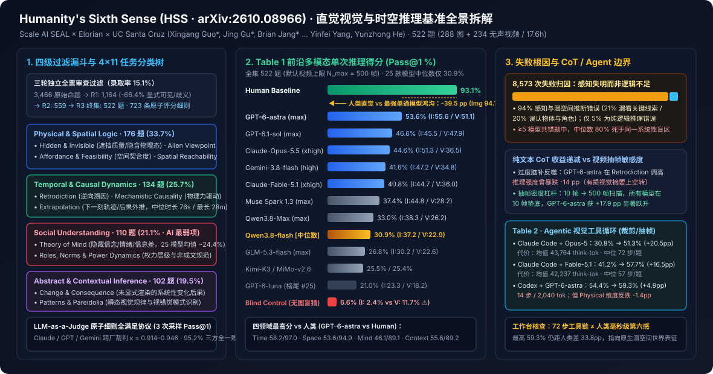

Humanity's Sixth Sense (HSS)…

1/1
Scale AI（SEAL 评测实验室）联合硅谷原生视觉推理初创实验室 Elorian 与 UC Santa Cruz 发布直觉视觉与时空推理基准 Humanity's Sixth Sense（HSS，arXiv:2610.08966，评测框架 xingang2/HSS-Eval，数据集 ScaleAI/HSS）。HSS 从 3,466 道人工原创命题中经三轮独立全票审查筛出…

Scale AI（SEAL 评测实验室）联合硅谷原生视觉推理初创实验室 Elorian 与 UC Santa Cruz 发布直觉视觉与时空推理基准 Humanity's Sixth Sense（HSS，arXiv:2610.08966，评测框架 xingang2/HSS-Eval，数据集 ScaleAI/HSS）。HSS 从 3,466 道人工原创命题中经三轮独立全票审查筛出…